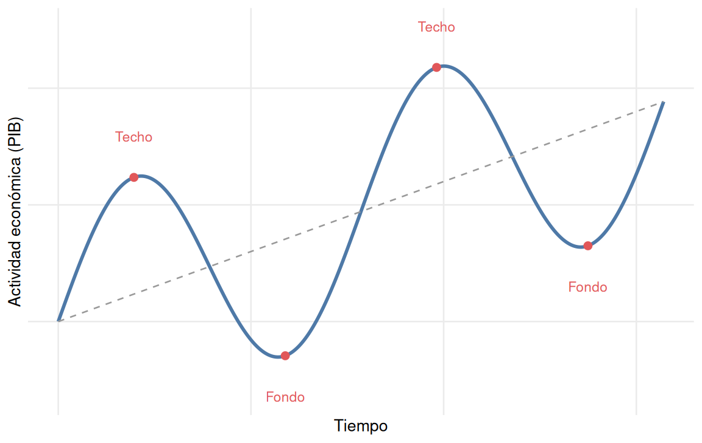

12 Las finanzas públicas y la política fiscal
12.1 El gasto público
Para cumplir sus funciones asignativa, distributiva y estabilizadora, el sector público necesita una estructura financiera sólida, planificada anualmente en los Presupuestos Generales del Estado.
NotaDefinición
El gasto público es el conjunto de recursos que el sector público moviliza para satisfacer las necesidades colectivas, producir bienes públicos y corregir las desigualdades mediante transferencias.
En España, el gasto público se distribuye principalmente en cuatro grandes bloques: la protección social (pensiones, prestaciones por desempleo, ayudas por dependencia), que constituye la partida más voluminosa; la sanidad, destinada a la red hospitalaria pública y al personal sanitario; la educación, orientada a garantizar la igualdad de oportunidades; y otros servicios como defensa, justicia e infraestructuras.
12.2 Los ingresos públicos
El Estado financia ese gasto mediante dos vías principales: los tributos y las cotizaciones sociales.
Los tributos son prestaciones exigidas por la administración como consecuencia de un hecho que la ley vincula al deber de contribuir. Se distinguen tres tipos: los impuestos, exigidos sin contraprestación directa e inmediata (directos, como el IRPF o el Impuesto de Sociedades, que gravan la renta; e indirectos, como el IVA, que gravan el consumo); las tasas, que se pagan a cambio de un servicio público concreto (tasas académicas, expedición del DNI); y las contribuciones especiales, cuando una actuación pública beneficia específicamente a un grupo de ciudadanos (la pavimentación de una calle).
Las cotizaciones sociales son aportaciones obligatorias de trabajadores y empresas destinadas a financiar la Seguridad Social. El trabajador aporta en torno al 6,4 % de su salario bruto, y la empresa una cuota patronal significativamente mayor, en torno al 30 %. A diferencia de los impuestos generales, son pagos finalistas: su recaudación está vinculada al mantenimiento del sistema de protección social.
12.3 Los principios del sistema tributario
El reparto de la carga tributaria se rige por dos principios constitucionales. El principio de capacidad económica establece que cada ciudadano debe contribuir en función de su aptitud para pagar, medida a través de tres indicadores: la renta (lo que se gana), el patrimonio (lo que se posee) y el consumo (lo que se gasta). El principio de solidaridad introduce la función redistributiva del sistema tributario: quienes han obtenido mayor éxito económico —influido no solo por el esfuerzo, sino también por la herencia o el entorno social— contribuyen proporcionalmente más para financiar la sanidad, la educación y la protección de quienes tienen menos recursos. Este principio se aplica mediante la progresividad: el tipo impositivo aumenta a medida que aumenta la base imponible.
12.4 Los Presupuestos Generales del Estado
NotaDefinición
Los Presupuestos Generales del Estado son el documento jurídico y contable en el que se recoge la relación de los gastos máximos que puede realizar el Estado y la previsión de los ingresos que espera obtener en un ejercicio económico.
La comparación entre ingresos y gastos determina el saldo presupuestario, que puede adoptar tres formas: superávit (ingresos superiores a gastos), equilibrio (ingresos iguales a gastos) o déficit público (ingresos inferiores a gastos). El déficit se expresa habitualmente como porcentaje del PIB, lo que permite comparar su magnitud entre países o períodos. España, por ejemplo, alcanzó un déficit del 9,7 % del PIB en 2011, tras la crisis financiera, y lo redujo hasta en torno al 2,8 % en 2024.
El déficit puede tener dos causas: el déficit discrecional, resultado de decisiones deliberadas de política fiscal (aumentar el gasto social sin subir impuestos en la misma proporción), y el déficit cíclico, que responde automáticamente a la fase del ciclo económico: en una recesión caen los ingresos (menos IRPF, IVA e Impuesto de Sociedades recaudados) y aumentan los gastos sociales (más prestaciones por desempleo), lo que dispara el déficit; en una expansión ocurre lo contrario.
12.5 La deuda pública
Cuando el Estado incurre en déficit debe financiarse emitiendo deuda pública (letras del tesoro, bonos, obligaciones). Conviene no confundir dos magnitudes distintas: el déficit público es una variable de flujo, la diferencia entre ingresos y gastos en un período determinado (normalmente un año); la deuda pública es una variable de stock, el total acumulado de dinero que el Estado debe en un momento dado, resultado de los déficits acumulados. En España, la deuda pública se sitúa en torno al 103 % del PIB, equivalente a aproximadamente 1,6 billones de euros.
TipLa analogía de la bañera
El déficit es el grifo abierto: cada año que se gasta más de lo que se ingresa, se vierte más agua (deuda) en la bañera. La deuda es el nivel del agua acumulada. El superávit es el desagüe: solo cuando los ingresos superan a los gastos puede empezar a reducirse la deuda total.
El principal problema de la deuda no es solo devolver el capital, sino pagar los intereses, que suponen un coste de oportunidad para el Estado: cuanto mayor es la deuda, menos recursos quedan disponibles para sanidad, educación o infraestructuras. Si el país no logra reducir su déficit, puede entrar en un efecto «bola de nieve», pidiendo prestado incluso para pagar los intereses de deudas anteriores.
La regla de oro de la hacienda pública plantea que el Estado solo debería endeudarse para financiar inversiones productivas —un hospital, una red de trenes— cuyos beneficios disfrutarán también las generaciones futuras, y no para cubrir gastos corrientes que no dejan ningún activo a cambio de esa carga futura.
12.6 La política fiscal
NotaDefinición
La política fiscal es el conjunto de decisiones del Estado sobre el gasto público, las transferencias y los impuestos para influir en la demanda agregada, con el objetivo de fomentar el crecimiento, crear empleo, controlar la inflación y mantener el equilibrio presupuestario.
El Estado actúa sobre la demanda agregada (\(DA = C + I + G + (X - M)\)) de dos formas. La acción directa consiste en modificar el gasto público (\(G\)): cuando el Estado compra bienes y servicios o contrata personal, inyecta dinero directamente en la economía. La acción indirecta consiste en modificar la renta disponible de familias y empresas mediante impuestos y transferencias:
\[\text{Renta disponible} = \text{Renta total} - \text{Impuestos} + \text{Transferencias}\]
Un aumento de las transferencias o una reducción de impuestos incrementa la renta disponible y, con ella, el consumo y la inversión privados.
12.6.1 La política fiscal expansiva
La política fiscal expansiva busca estimular la economía en fases de recesión, aumentando el gasto público, incrementando las transferencias y reduciendo los impuestos. Sus efectos positivos son el crecimiento del PIB y la reducción del desempleo; sus riesgos, la inflación (si la demanda crece demasiado rápido) y el aumento del déficit público (al gastar más e ingresar menos).
TipCaso real: España y la pandemia de covid-19
Durante la crisis sanitaria de 2020, España aplicó una política fiscal fuertemente expansiva para evitar el colapso económico: el gasto público alcanzó un máximo histórico del 52 % del PIB, financiando medidas como los expedientes de regulación temporal de empleo (ERTE) y ayudas directas a los sectores paralizados.
Una parte del efecto de esta política se explica por el multiplicador del gasto público: el impacto final sobre la economía supera la cantidad inicial invertida, porque el gasto de un agente se convierte en el ingreso de otro. Una inversión pública inicial —por ejemplo, la construcción de un puente— genera contratación en la empresa constructora; esos trabajadores, con salario, aumentan su consumo en otros comercios; esos comercios, al vender más, contratan a su vez más personal, y el ciclo se repite, multiplicando el efecto original sobre la producción y el empleo.
12.6.2 La política fiscal contractiva
La política fiscal contractiva persigue el objetivo contrario: frenar la inflación o sanear las cuentas públicas reduciendo el gasto público, recortando transferencias y elevando impuestos. Sus efectos positivos son el control de la inflación y la reducción del déficit; sus riesgos, la caída del PIB y el aumento del desempleo. Se aplica, típicamente, para frenar un sobrecalentamiento de la economía o para reducir un déficit estructural insostenible, y suele resultar políticamente impopular, por lo que los gobiernos tienden a posponerla hasta que resulta indispensable.
TipCaso histórico: España (2010-2013)
Tras la crisis de 2008, España aplicó severas políticas contractivas: recortes en el gasto público y subidas del IVA y el IRPF. El déficit se redujo progresivamente, pero el impacto económico fue profundo: el consumo se desplomó y el desempleo alcanzó un máximo histórico cercano al 27 % en 2013.
12.7 Los ciclos económicos
NotaDefinición
Los ciclos económicos son las oscilaciones de la actividad económica que se repiten sucesivamente en el tiempo, alternando fases de expansión y de recesión, en las que el PIB, el empleo, el consumo y los precios tienden a evolucionar de forma conjunta.
La Figura 12.1 muestra las cuatro fases del ciclo. El fondo (mínimo cíclico) se caracteriza por una infrautilización de los recursos: alto desempleo, fábricas operando por debajo de su capacidad y demanda débil, como ocurrió en España en 2013, con un desempleo cercano al 26 %. La expansión (auge) es la fase de recuperación, impulsada habitualmente por un aumento de la inversión que genera más producción, contratación y consumo, retroalimentándose en un efecto multiplicador; España vivió esta fase entre 1995 y 2007. El techo (máximo cíclico) es el punto álgido, cuando la economía se acerca a su producción potencial y el desempleo alcanza niveles mínimos, a menudo acompañado de desequilibrios acumulados, como burbujas especulativas. La recesión (crisis) es la fase descendente: caen las ventas, las empresas frenan la inversión y despiden trabajadores, reduciendo la renta disponible y el consumo en una espiral negativa, como ocurrió en España tras el estallido de la burbuja inmobiliaria en 2008.
TipLas burbujas especulativas
Una burbuja se produce cuando el precio de un activo sube de forma desorbitada por la especulación, alejándose de su valor real: los inversores compran esperando revenderlo más caro, no por su utilidad. Cuando los compradores dejan de aparecer, la burbuja estalla y los precios caen bruscamente, acelerando la llegada de una recesión. El caso histórico más citado es la «tulipomanía» holandesa del siglo XVII, cuando un solo bulbo de tulipán llegó a costar el equivalente a una vivienda de lujo antes de que el mercado se desplomara en cuestión de días.
12.7.1 Los efectos de los ciclos según su origen
No todas las fases del ciclo tienen el mismo origen ni las mismas consecuencias. Conviene distinguir si la fluctuación procede de la demanda o de la oferta.
| Tipo de ciclo | PIB | Empleo | Precios |
|---|---|---|---|
| Expansión de demanda | Aumenta | Aumenta | Suben (inflación) |
| Expansión de oferta | Aumenta | Aumenta | Bajan o se estabilizan |
| Recesión de demanda | Disminuye | Disminuye | Bajan o se estabilizan |
| Recesión de oferta | Disminuye | Disminuye | Suben (estanflación) |
Una expansión de demanda genera crecimiento y empleo, pero con riesgo de sobrecalentamiento e inflación si la demanda supera la capacidad productiva. Una expansión de oferta, originada en una mejora de la productividad, es el escenario más favorable: crecimiento y empleo sin presión sobre los precios. Una recesión de demanda provoca caída de la producción y el empleo, pero tiende a frenar la inflación. Una recesión de oferta, causada por un aumento súbito de los costes de producción (un choque energético, por ejemplo), es el escenario más complejo: la producción cae y el desempleo aumenta al mismo tiempo que suben los precios, dando lugar a la estanflación descrita en el tema anterior.
12.8 Las políticas de estabilización
Ante la inestabilidad de los ciclos económicos —un fallo de mercado que este no puede corregir por sí solo—, el Estado asume una función estabilizadora orientada a cinco objetivos: el crecimiento económico sostenible, el pleno empleo, la estabilidad de precios, el equilibrio presupuestario y el equilibrio exterior (que las exportaciones y las importaciones no generen un desequilibrio persistente).
Ante una recesión de demanda, el Estado combina dos herramientas: la política monetaria expansiva (el banco central reduce los tipos de interés o aumenta la cantidad de dinero en circulación, abaratando el crédito para familias y empresas) y la política fiscal expansiva (el Gobierno aumenta el gasto público, las transferencias, o reduce los impuestos). Ambas desplazan la demanda agregada hacia la derecha, reactivando la producción y el empleo.
Ante una expansión de demanda excesiva, con riesgo de sobrecalentamiento, se aplican las políticas simétricas: política monetaria contractiva (subida de tipos de interés) y política fiscal contractiva (reducción del gasto público o subida de impuestos), para frenar la escalada de precios asumiendo como coste una ralentización del crecimiento.
Ante una recesión de oferta, el Estado se enfrenta a un conflicto de objetivos: las políticas expansivas estimulan el empleo pero agravan la inflación, y las contractivas controlan los precios pero agravan la caída de la producción. Las políticas de demanda a corto plazo resultan insuficientes, por lo que la respuesta adecuada son las políticas de oferta, orientadas al largo plazo: incentivos fiscales a la inversión, inversión en capital humano (educación y formación), fomento de la investigación y el desarrollo, y modernización de infraestructuras. Su objetivo no es influir en el gasto a corto plazo, sino mejorar la competitividad y la capacidad productiva del país, permitiendo un crecimiento sostenido sin presión inflacionista.